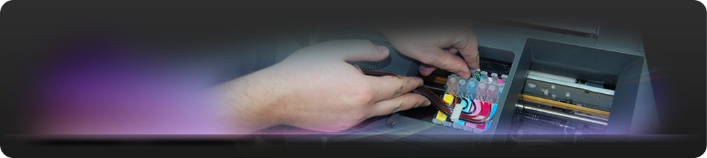
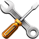

Якщо з Вашою офісною технікою виникли проблеми, наші досвідчені фахівці завжди будуть раді Вам допомогти. Наші сервісні інженери проведуть ретельну діагностику Вашого апарату, технічне обслуговування, замінять вузли, що вийшли з ладу, і протестують його згідно з технічними вимогами виробника.
Експрес-ремонт. У разі потреби фахівці безкоштовно в умовах майстерні здійснять діагностику вашої техніки, нададуть консультаційну підтримку або проведуть експрес-ремонт. Проводиться він у присутності клієнта і зазвичай займає не більше години.
Tехнічне обслуговування. Необхідне для поліпшення якості роботи техніки, а також для запобігання серйозним несправностям. При проведенні профілактичних робіт сервіс-інженер розбирає апарат та проводить його чищення та змащування відповідно до технічних вимог виробника. Потім апарат тестується за спеціальними тестами.

Ремонт і діагностика в сервісному центрі і у замовника. При проведенні діагностики визначається причина виниклої несправності.Якщо вона виявляється нескладною, то інженер її усуває відразу. В інших випадках він локалізує несправність, консультує по комплектуючих, які необхідно замінити, складає кошторис витрат на майбутній ремонт.
Післягарантійне обслуговування. Наші фахівці забезпечують післягарантійне обслуговування і ремонт офісної техніки: друкарських пристроїв, копіювальних апаратів та іншого устаткування. Консультації замовника з питань експлуатації устаткування.
Заправка та відновлення картриджів для лазерних принтерів і копіювальних апаратів. Заправляємо картриджі усіх відомих виробників. В процесі заправки ми не лише підберемо оптимальний для вашого картриджа тонер, але і додатково проведемо комплекс підготовчих робіт можливих тільки в лабораторних умовах (повне тестування картриджа, видалення часток старого і відпрацьованого тонера, очиcтка і поліровка фотобарабану та ін.)
● Заправка в офісі - 10-15 хвилин на один картридж
● Відновлення в офісі - 15-25 хвилин на один картридж
● Виїзд майстра - В день заявки
● Доставка - Протягом доби
Заправка картриджів у нас - це завжди вигідно, економно і безпечно.
Продаж СБПЧ і ПЗК для принтерів, БФП, плоттерів і друкуючих пристроїв із вже встановленою СБПЧ або ПЗК.. СБПЧ (Система Безперервної Подачі Чорнила) - це пристрій, який дозволяє значно знизити витрати при друці на струменевому принтері, БФП або плоттері.
СБПЧ складається з трьох частин: місткості-донори для чорнила, картриджи аналогічні оригінальним, і шлейф, який сполучає місткості-донори з картриджами. Суть роботи СБПЧ полягає в тому що чорнило в картридж надходить із зовнішніх місткостей по шлейфу, таким чином після видруковування ресурсу картриджів не треба купувати нові, чорнило автоматично доливається в картриджі. Використання СБПЧ дозволяє отримати економію в 20-30 разів у порівнянні з оригінальними витратними материалами на кожному відбитку, або економію в 1000-1500% на відбиток.Установка СБПЧ повністю усуває можливість друкуючої голівки контактувати з повітрям (як це відбувається при заміні оригінальних картриджів), що дозволяє експлуатувати принтер набагато довше.